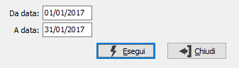

Annullamento stampa giornale
Si tratta di un programma di servizio relativo al modulo di Magazzino che effettua l'annullamento della stampa del giornale di magazzino. Il programma aggiorna movimenti contabili ripristinando i valori che riguardano la stampa del giornale di magazzino su tali archivi, inoltre aggiorna la data di stampa giornale sui protocolli di magazzino.

ESERCIZIO: campo numerico per indicare il numero dell’esercizio in cui è stata effettuata la rilevazione delle rimanenze di cui si desidera l’annullamento. Il campo deve contenere un valore valido.
DA DATA: inserire il limite dal quale si desidera iniziare l’annullamento della stampa. Il campo non può essere confermato a vuoto.
A DATA: inserire il limite al quale si desidera terminare l’annullamento della stampa. Il campo non può essere confermato a vuoto.